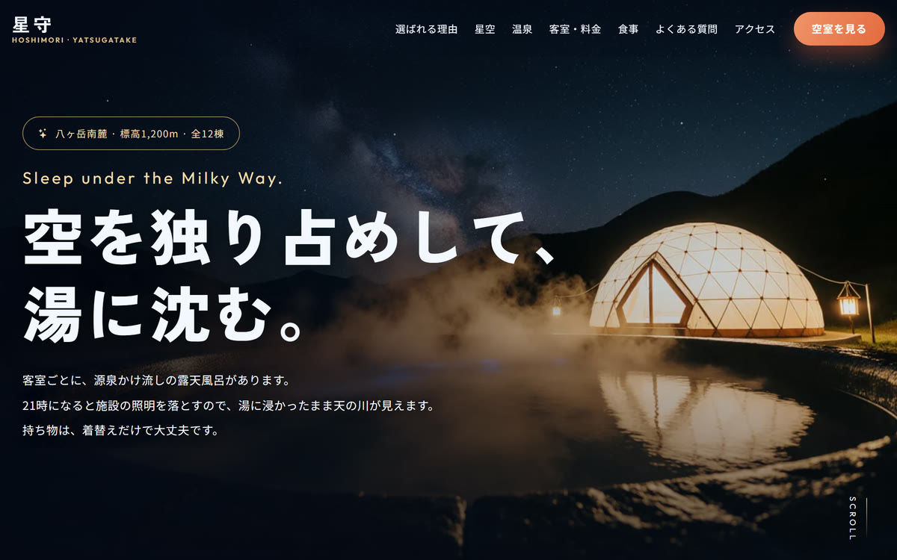
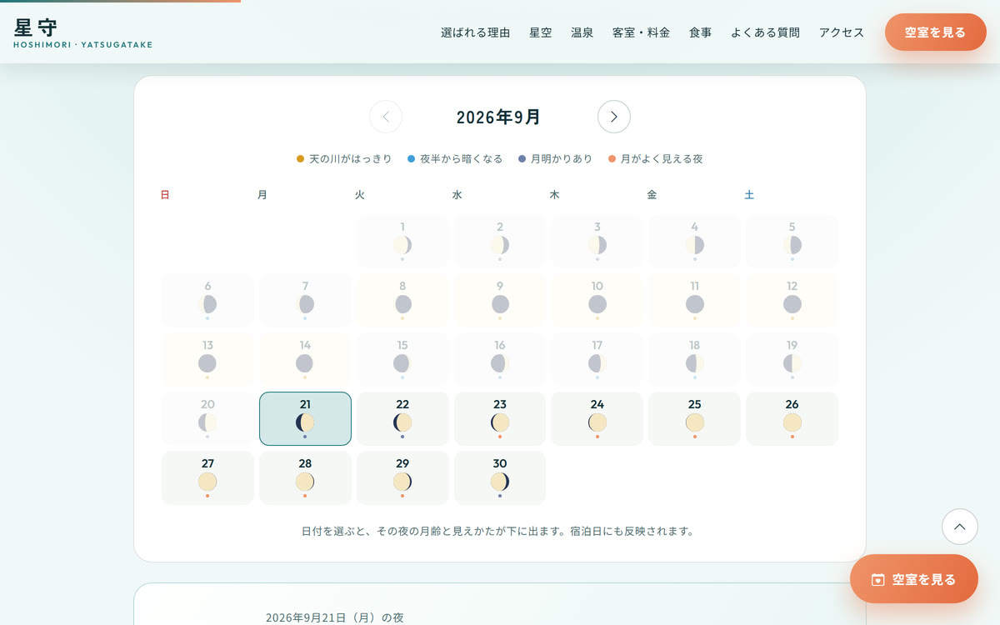
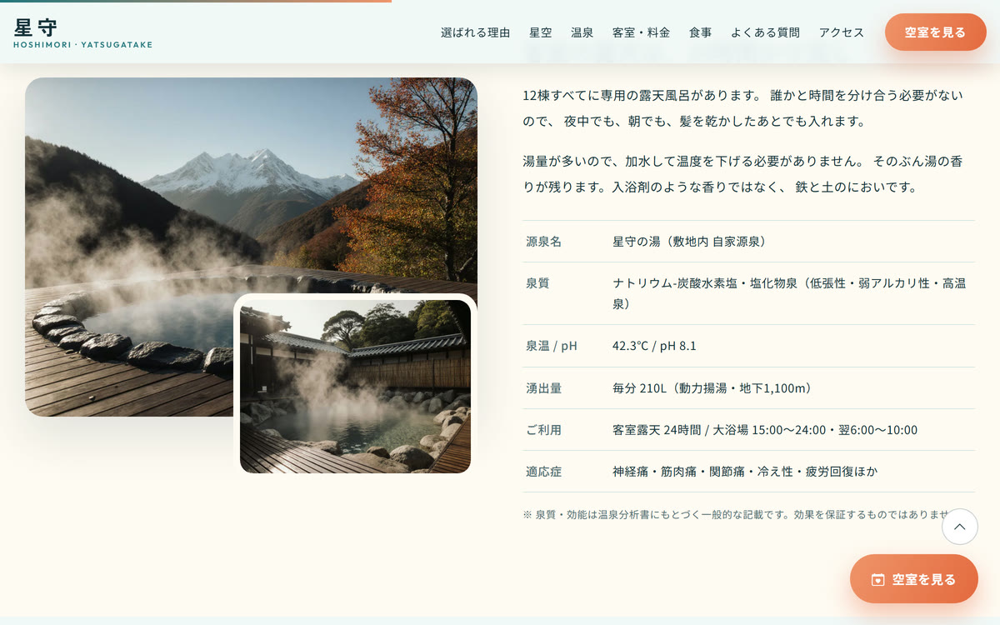

グランピング施設（温泉つき）／ 静的ランディングページ ＋ 広告バナー
星守 -HOSHIMORI-
八ヶ岳南麓、標高1,200mに建つ温泉つきグランピング施設の集客ページです。 「満天の星空と天然温泉」という売りを、どう「今週末に予約する理由」まで持っていくかを主題にして作りました。



| 種別 | グランピング施設の集客／架空の施設を想定した自主制作 |
|---|---|
| 担当範囲 | 企画・構成・デザイン・実装・写真の生成・動作確認 |
| 使用技術 | HTML ／ CSS（BEM設計）／ JavaScript（ライブラリ不使用）／ インラインSVG ／ Node.js（バナー書き出し・自動確認） |
| 規模 | 1ページ11セクション ／ 広告バナー8サイズ ／ 自動確認26項目 |
「星がきれい」だけでは、日付が決まらない
星空を売りにする宿のページは、たいてい「満天の星空」と書いて天の川の写真を貼って終わります。読んだ人は「きれいだな」とは思いますが、いつ行けばそれが見られるのかが分からないので、予約には進みません。
星の見えかたは、実際には月の明るさでほとんど決まります。満月の夜にどれだけ空気が澄んでいても、天の川は月明かりに負けて見えません。そこで、月齢から見えかたを判定するカレンダーを作り、「いつ来ればいちばん見えるか」を先に答えるようにしました。
月齢を自分で計算する
朔望月 29.530588853日と、2000年1月6日18:14（UTC）の新月を基準にして、任意の日の月齢を出しています。ライブラリは使っていません。新月からの距離で「天の川まで見えます／夜半から暗くなります／月明かりが少しあります／月そのものがよく見える夜」の4段階に振り分けています。
計算が正しいか確かめるため、2026年の実際の新月・満月9件と突き合わせました。最大のずれは0.89日で、判定の幅が±3.5日なので目安としては足りています。そのうえで、月齢だけでは決まらない（天気と、月の出入りの時刻がある）ことはページ上に明記しました。当たらない予測を言い切るほうが、宿としては損だと考えています。
月の満ち欠けを、画像を使わずに描く
カレンダーには日数ぶんの月の絵が要ります。30枚の画像を用意すると差し替えも配色変更も面倒なので、SVGで描きました。外周の半円と、横半径だけが変わる半楕円（明暗の境界）を2本の円弧でつなぎ、光っている側だけを塗っています。月齢を渡せば任意の形が出るので、画像は1枚も持っていません。
日付を3か所で共有する
日付を選ぶ場所が、ファーストビューの検索ボックス・カレンダー・予約フォームの3か所あります。別々に持つとどこかがずれるので、どこで変えても残り2か所とカレンダーの表示月が追従するようにしました。月齢の計算も判定も1か所にまとめ、3か所が同じ関数を呼びます。
バナー8枚を、画像編集ソフトを使わずに作る
広告バナーは「同じ訴求を、媒体ごとに違うサイズで」出すものです。1枚ずつ作ると、コピーを1文字直すたびに8枚すべてを作り直すことになります。
そこで訴求とサイズを別々のデータに持ち、HTML/CSSで描いて実ブラウザから書き出す形にしました。コピーを直す場所は1か所で、コマンド1回で8枚が揃います。狭い枠（300×250 / 728×90 / 160×600）は折り返すと読めなくなるため、1行用の短いコピーに自動で差し替えています。
つまずいた点：ファーストビューの写真が、真っ黒にしか見えなかった
ファーストビューに写真を入れたのに、開くと星空しか見えず、肝心のドームも露天風呂も消えていました。最初は切り抜きの指定（object-position）が悪いのだと思い、その前提でメモまで残しました。
実際に描画された大きさを測ってみると、縦は1ピクセルも切れていませんでした。原因は写真の上に重ねた暗い覆いで、文字を読ませるために左を0.94、下を0.96まで濃くしていました。被写体はその下に沈んでいただけです。文字が乗る左側だけを落とす形に変えて解決しています。
見た目から原因を推測して、確かめずにメモを残していたのが良くなかった点です。測れば1分で分かることでした。
つまずいた点：露天風呂を頼んだら、井戸が出てきた
写真は画像生成モデル（FLUX.1 Krea-dev）で作っています。ファーストビュー用に「ドームテントのそばに、小さな石造りの露天風呂」と指定したところ、出てきたのは井戸のような石組みで、湯気も細く、どう見ても風呂に見えませんでした。
添え物として書いた要素は、添え物としてしか描かれないのだと分かりました。「湯船を画面の主役に、手前の右寄りに大きく」「湯がなみなみと張られた水面と、逆光で白く光る湯気」と書き直したら、一度で意図どおりのものが出ています。文章と同じで、主役は主役として書く必要がありました。
つまずいた点：配色を反転したら、日付のアイコンが消えた
当初は夜空を基調にした暗い配色でしたが、温泉の施設としては重いので、湯を思わせる淡い青緑に変えました。背景と文字が対になって参照される作りだったため、変数の値を入れ替えるだけで大半は反転できています。
問題は、変数を通していなかった箇所でした。日付入力欄のカレンダーアイコンに、暗い背景用の反転指定（filter: invert(1)）が直接書かれていて、地を明るくしたことで白地に白のアイコンになり見えなくなっていました。予約フォーム側にも効いていたので、両方まとめて外しています。
配色を入れ替えるときは、変数で拾える箇所より、変数を通さず直接書いた箇所のほうが危ないと感じました。
文字の読みやすさは、目視ではなく実測で詰めた
配色を全面的に入れ替えたので、明るい面に載る文字のコントラストを1つずつ測りました。単色の背景に載る文字217要素のうち、最初は17件がWCAG AAの基準を下回っていました。差し色の青緑とグレーの文字色を暗くし、CTAの橙は白抜き用とは別に文字用の色を足して、最終的に0件にしています。
目で見て「読めそう」と判断していたら、この17件はそのまま残っていたはずです。
作ったものが動くか、ブラウザを動かして確かめた
日付の共有や月齢の判定など、数字と状態が絡む部品が多いので、実際のブラウザを操作して結果を確認するスクリプトを書きました。26項目あり、すべて通っています。
| 確認した部分 | 件数 | 確かめていること |
|---|---|---|
| 月齢の計算 | 1件 | 2026年の実際の新月・満月9件と一致すること（最大ずれ0.89日） |
| カレンダー | 8件 | 今月の表示、日数ぶんのマスと月の絵、過去日が押せないこと、月送りと下限 |
| 日付の共有 | 5件 | 選んだ日が検索ボックスと予約フォームに入ること、3か所に同じ月齢が出ること、入力欄から変えるとカレンダーが追従すること |
| 判定 | 1件 | 1ヶ月のあいだに4段階すべてが現れること |
| よくある質問 | 3件 | 開閉、押したものだけが開くこと、支援技術向けの属性 |
| 予約の導線 | 2件 | 泊数と人数がフォームへ引き継がれること、お名前欄へカーソルが移ること |
| フォーム | 3件 | 未入力で送信されないこと、完了表示、送信後のリセット |
| ページ全体 | 3件 | ページ内リンクの飛び先、全画像の代替テキスト、エラーが出ていないこと |
このほか、パソコン幅とスマートフォン幅での全セクションの表示、横スクロールが出ないこと、JavaScriptを切った状態でも全セクションが読めることを目で確認しました。
写真は生成して作った
架空の施設なので、条件に合う写真は探しても見つかりません。16点すべて画像生成モデルで作る前提で、必要な絵の内容を1点ずつ文章に起こしました。生成できていないぶんは、「この枠に最終的にどんな写真が入るか」を日本語で書いた仮画像を置いています。何が入るか分かる状態にしておかないと、レイアウトの判断ができないためです。
執筆時点で16点中8点が写真で、残り8点は仮画像のままです。無料の計算枠が1日あたりで区切られており、一度に7点ほどで頭打ちになるためです。枠が開いた日に差し替えます。
実運用に足りていないもの
お見せするために作ったものなので、実際に開業するなら追加が必要です。予約フォームは送信処理を持たないデモで、実運用では確認メールの送信と予約台帳への登録、そして空室の在庫管理が要ります。いまは日付・泊数・人数を受け取ってフォームに渡すだけで、実際に空いているかは見ていません。
月齢カレンダーについては、天気予報のAPIと組み合わせられると実用性が上がります。月齢は何ヶ月先でも計算できますが、天気は直前にならないと分からないので、遠い日は月齢だけ、近い日は天気も添えるという出し分けが要ると考えています。